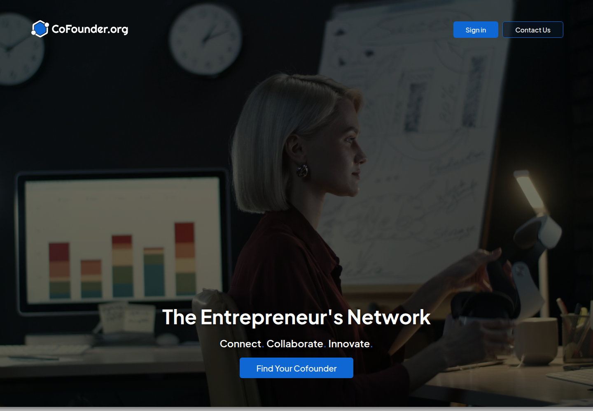
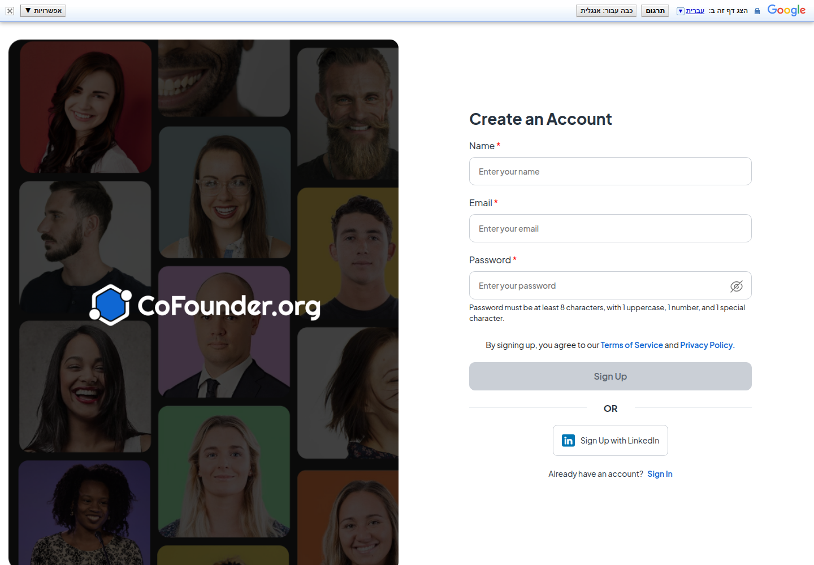
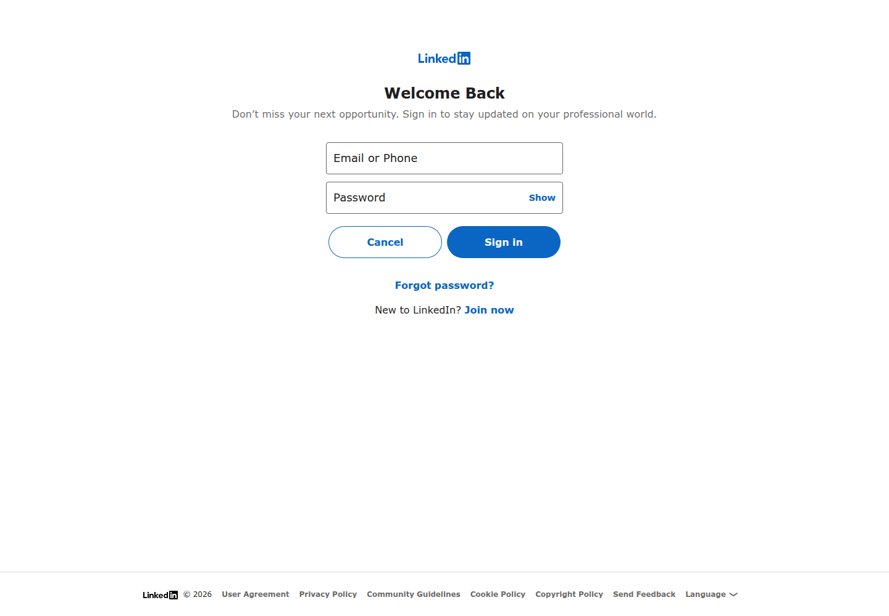

Profile
- Company
- Cofounder.org
- Url
- https://www.cofounder.org/
- Source Category
- Cofounder-matching platforms
- Research Status
- Deep Cited Research / Draft Complete
- Current Status
- live - confirmed via direct fetch (HTTP 200, active LinkedIn-signup CTA, 2026 footer copyright, functioning contact form). Small/early-stage but genuinely operating, not dead or hijacked.
- Founded Launch Year
- not found / no public source - no Crunchbase profile, press coverage, or About page with a founding date was located in this pass
- Company Age
- not found / no public source
- Hq Country
- US (entity registered as 'The CoFounder, LLC' per site footer; no state/city disclosed)
- Operating Area
- not found / no public source specifying geographic focus beyond general/global; batch-1 listed 'US'
- Target Users
- Early-stage founders seeking co-founders, skilled partners, and investors; site frames itself broadly as 'The Entrepreneur's Network'
- Product Category
- cofounder matching; founder-investor / capital; NDA/e-sign; AI
Product Flows
- Swipe Card Interface
- not found / no public source - site UI is LinkedIn-signup + profile/search based per available description, no swipe mechanic documented
- Mutual Match
- not found / no public source describing an accept/reject mutual-match step
- Ai Matching Scoring
- yes - smart weekly matches
- Ai Deck Scoring
- not found / no public source
- Founder To Founder Flow
- yes
- Founder To Investor Flow
- yes
- Project Profiles
- yes
- Messaging Collaboration
- not clearly documented - platform emphasizes weekly emailed matches and a contact form; no in-app messaging/chat feature is explicitly described in available source material
- Mobile App
- not found / no public source; appears web-only
- Web App
- yes
Security & Documents
- Nda Gated Unlock
- not found / no public source - contradicts batch-1's 'yes'; no NDA feature is described anywhere on the site or FAQ. Corrected to 'not found'.
- Data Room
- not found / no public source
- E Signature
- not found / no public source - contradicts batch-1's 'yes'; LinkedIn-based signup is the only documented onboarding mechanism, no e-signature/document tooling found. Corrected to 'not found'.
- Meeting Prep Ai Briefing
- not found / no public source
Pricing, Funding & Traction
- Pricing Model
- Free currently; site FAQ states 'we may introduce premium features in the future to enhance visibility and matchmaking' - no paid tier live yet
- Business Model
- Free community-matching model today, with a stated intent to add a future premium/visibility tier (freemium-in-waiting)
- Total Funding
- not found / no public source
- Funding Rounds
- not found / no public source
- Investors
- not found / no public source
- Funding Source Type
- not found / no public source - appears to be a small/bootstrapped, early-stage, possibly solo-founder project given the lack of any press, funding, or team info
- Last Funding Date
- not found / no public source
- Users Traction
- Batch-1 evidence text referenced '3 Matches' as a UI label (part of a numbered feature list: '3 Matches That Work for You'), not an actual user/traction count - this was a scraping misread in the original pass, not a real traction metric. No genuine user-count, member-count, or match-count statistic was found anywhere on the site or in press. Corrected from batch-1's misleading '3 Matches' entry.
- Deals Funding Facilitated
- not found / no public source
- Partnerships
- not found / no public source
- Media Coverage
- not found / no public source - no press articles, TechCrunch mentions, or third-party reviews located in this pass; appears to have no earned or paid media coverage
- Product Update Activity
- Site is live and the footer copyright reads 2026, indicating basic maintenance, but no changelog, blog, or update cadence evidence found
- Acquisition Rebrand History
- not found / no public source
Scores
- Product Overlap Score
- 3
- Feature Maturity Score
- 2
- Market Traction Score
- 1
- Funding Strength Score
- 1
- Ai Depth Score
- 1
- Nda Security Strength Score
- 1
- Network Moat Score
- 1
- Direct Threat Score
- 1.5
- Source Confidence
- Low
Evidence Notes
- Primary Sources
- https://www.cofounder.org/
- Secondary Sources
- None found - no Crunchbase, LinkedIn company page, press, or review-site coverage located for Cofounder.org in this research pass
- Unsupported Claims
- Batch-1's 'nda_gated_unlock: yes', 'e_signature: yes', and 'users_traction: 3 Matches' are all unsupported by any source found in this pass and have been corrected/flagged. This is the weakest-evidenced company in the batch - appears to be a small or very early-stage independent project with minimal public footprint.
- Contradictions
- Batch-1 listed e_signature and nda_gated_unlock as 'yes' with no apparent source; this pass found no corroborating evidence for either. Batch-1's 'users_traction: 3 Matches' is almost certainly a scrape artifact from the site's numbered feature-benefit list ('3. Matches That Work for You'), not a real metric.
- Last Checked
- 2026-07-19
- Notes
- Smallest and least-documented company in this batch: no Crunchbase entry, no press coverage, no disclosed founding date, team, or funding found despite real search effort. Product is live and functional (LinkedIn signup, weekly email matches, founder-request posting) but reads as an early/bootstrapped project rather than a funded, scaled competitor. Lowest direct-threat score of the batch given near-total absence of traction/security/AI evidence.
Registration Flow
Research date: 2026-07-19. Screenshots are sanitized public copies from the private registration-flow capture set; credentials, tokens, verification links/codes, browser chrome, and private identifiers are not intentionally published.
Outcome: stopped at required truthful-details / submission boundary.
Stop point: Blank direct-registration form before entering credentials, and blank official LinkedIn OAuth login entry before signing in or granting access
Blocker / boundary: The direct account form requires a truthful full name in addition to the authorized email address and site-specific password, but no name was supplied in the registration credential file. The alternative route requires signing into a LinkedIn account and proceeding through OAuth, for which no authorized LinkedIn credentials or permission approval were provided.
- Official public homepage. Cofounder.org's official homepage presents The Entrepreneur's Network, offers Sign in and Find Your Cofounder controls, and describes matching founders with cofounders, skilled partners, and investors.
- Create an Account form. Find Your Cofounder opens the official /register page. The blank form requires Name, Email, and Password; states that the password must contain at least 8 characters with an uppercase letter, number, and special character; treats signup as agreement to the Terms of Service and Privacy Policy; and offers either Sign Up or Sign Up with LinkedIn.
- LinkedIn OAuth login entry. The alternative Sign Up with LinkedIn path opens LinkedIn's official OAuth login entry with blank Email or Phone and Password fields, plus Cancel and Sign in controls. No LinkedIn credentials were entered and no OAuth permission was granted.


